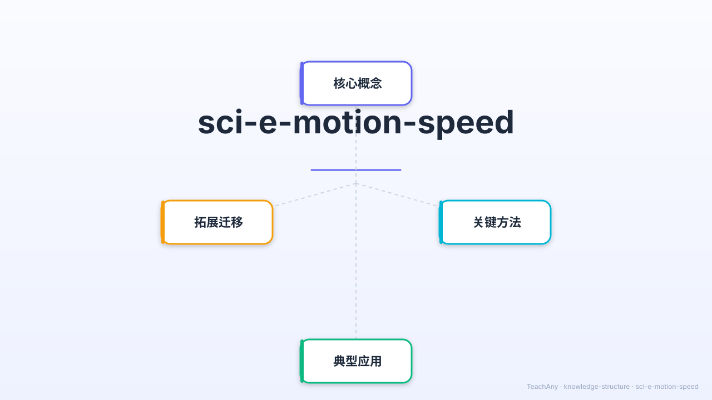

从蜗牛到光速，用数字说话！学习速度的科学语言，探索运动的奥秘。

你的学习伙伴，随时解答疑问
从生活情境出发，建立学习动机
我们每天都在运动——走路、骑车、乘车……物体的位置每时每刻都在变化，运动是世界的基本现象。
🤔 但是——你在行驶的火车上，你动了吗？坐着的你相对于座位是静止的，可相对于窗外的树又是飞速移动的……
而且，人说"快"、"慢"太模糊了——怎么才能精确地描述运动快慢？
✅ 因此，科学家发明了「参照物」来判断运动，发明了「速度」来精确衡量运动的快慢。今天，我们就来掌握这个工具！
参照物决定了你的运动判断
物体的位置随时间发生变化，就说该物体在运动。
判断运动时，选定的"不动"的标准物体叫参照物。参照物不同，运动判断可能相反！
以窗外树为参照物 → 运动
以车厢座位为参照物 → 静止
运动是相对的，宇宙中没有绝对静止的物体。我们研究的都是相对运动。
用数学语言精确描述运动快慢
小明10秒内跑了50米：
v = 50 ÷ 10 = 5 m/s
速度单位：m/s（米/秒）
常见：km/h（千米/时）
速度越大 → 同样时间内走的距离更多
或：速度越大 → 同样距离用的时间更短
视频含5个场景：标题 → 参照物动画 → 速度公式推导 → 速度对比条形图 → 总结（22秒，1920×1080 H264）
对数比较，感受速度的巨大跨度（对数坐标）
💡 光速是蜗牛速度的 60亿倍！ 光每秒能绕地球 7.5圈， 而蜗牛爬 7.5 圈地球需要约 2400万年。
点击卡片查看详情，再拖拽例子到正确分类
速度大小和方向始终不变。
例：匀速行驶的汽车
速度大小或方向发生变化。
例：启动的公交车、过山车
输入距离和时间，自动计算速度；比较多个物体的速度
输入你想比较的物体、距离和时间，点击"添加"后在图表中对比速度大小。
概念之间的联系一目了然
三道选择题，含错因诊断
6段 TTS 音频，点击播放
完成各项任务解锁徽章！
学习了运动与参照物
掌握了 v = s ÷ t
比较了7种速度
掌握四种运动方式
完成了速度计算
全对4道选择题
完成所有学习任务！